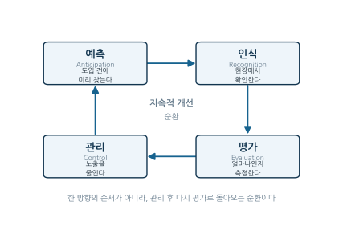
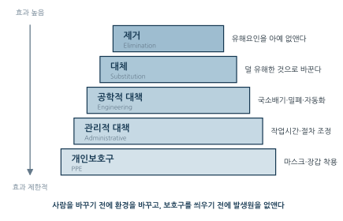
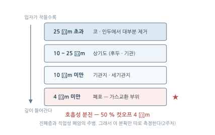
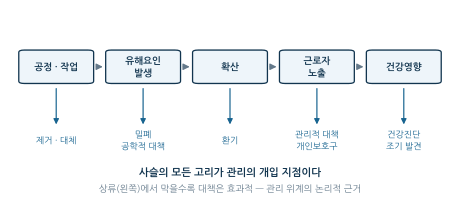

1주차. 산업위생 개론과 역사
산업위생의 정의, 4대 핵심 영역(AREC), 역사적 발전, 유해인자 분류, 직업병, 전문가 윤리
학습목표
이 주를 학습한 후 여러분은 다음을 할 수 있어야 합니다:
- 산업위생의 정의(AIHA)와 목적을 설명할 수 있다
- 예측·인식·평가·관리(AREC)의 순환 구조를 설명하고 실제 사례에 적용할 수 있다
- 산업위생의 역사적 발전 과정과 주요 인물(Ramazzini, Pott, Hamilton)의 기여를 설명할 수 있다
- 유해인자를 물리적·화학적·생물학적·인간공학적 인자로 분류하고 예를 들 수 있다
- 직업병과 작업관련성 질환을 구분하고 직업병 인정의 4대 요건을 설명할 수 있다
- 직업력 청취의 선별 질문과 상세 직업력의 구성 요소를 설명하고, 흔한 누락 지점을 지적할 수 있다
- 산업위생전문가의 윤리강령(AAIH)과 주요 기관(ACGIH, NIOSH, AIHA, KOSHA)의 역할을 구분할 수 있다
1. 산업위생이란 무엇인가
1.1 하나의 질문에서 시작하기
1700년, 이탈리아의 의사 라마찌니는 환자를 진료할 때 반드시 한 가지 질문을 추가하라고 가르쳤다.
“당신의 직업은 무엇입니까? (What is your occupation?)”
이 한 문장이 산업위생이라는 학문 전체를 요약한다. 질병의 원인이 개인의 몸 안이 아니라 그가 일하는 환경에 있을 수 있다는 것 — 그리고 환경에 원인이 있다면 치료가 아니라 환경을 바꾸는 것이 근본적 해결이라는 것이다.
1.2 공식적 정의
산업위생(Industrial Hygiene, Occupational Hygiene)은 작업환경에서 근로자의 건강을 보호하고 증진시키기 위한 과학이자 기술이다. 가장 널리 인용되는 정의는 미국산업위생학회(AIHA)의 것이다.
“산업위생이란 작업환경에 존재하는 환경적 요인과 스트레스로서 근로자의 건강과 안녕(well-being)에 장해를 초래하거나 불쾌감을 유발하는 것들을 예측(Anticipation), 인식(Recognition), 평가(Evaluation), 관리(Control)하는 과학과 기술이다.” — AIHA
이 정의를 뜯어 보면 산업위생의 지향이 드러난다.
| 정의 속 표현 | 함의 |
|---|---|
| 환경적 요인 | 물리적·화학적·생물학적 인자를 모두 포함한다 |
| 스트레스 | 인간공학적·심리사회적 요인까지 대상을 확장한다 |
| 건강과 안녕 | 질병 예방을 넘어 전반적 웰빙을 추구한다 |
| 불쾌감 | 질병 수준이 아닌 불편함도 관리 대상이다 |
| 4대 기능 | 예측→인식→평가→관리의 체계적 접근 |
1.3 산업보건과 산업위생
산업보건(Occupational Health)이 도달하려는 목표 상태라면, 산업위생은 그 목표를 달성하는 실천 방법이다. ILO/WHO 합동위원회(1950)는 산업보건의 목적을 다음과 같이 제시했다.
- 최고도 유지·증진: 모든 직종 근로자의 신체적·정신적·사회적 건강의 최고 수준 유지 및 증진
- 건강장해 예방: 작업조건으로 인한 건강 손상의 예방
- 유해요인 보호: 건강에 유해한 요인으로부터 근로자 보호
- 적합 배치: 근로자의 생리적·심리적 특성에 적합한 직무환경에 배치 및 유지
핵심 원칙: “작업을 인간에게, 인간을 작업에 적합하게 (Fitting the work to the worker and the worker to the work)”
의학이 개인을 진료한다면 산업위생은 환경을 진료한다. 치료(3차 예방)가 아니라 질병이 발생하기 전의 예방(1차 예방)이 핵심 목표이며, 그래서 산업위생의 주 무대는 병원이 아니라 작업장이다.
2. 산업위생의 4대 핵심 영역 (AREC) · 산업위생의 역사
2.1 산업위생의 4대 핵심 영역 (AREC)
산업위생의 모든 활동은 네 개의 영역으로 구성되며, 이 넷은 한 방향의 순서가 아니라 끊임없이 되돌아오는 순환이다. 이 순환 구조는 이 과목 전체의 뼈대이기도 하다 — 2~3주와 11주 후반(평가 — 작업환경측정·노출기준·생물학적 모니터링), 4~7주·11주 전반·12주(인식의 대상인 유해인자), 9~10주·13주·14주(관리 — 환기·보호구·작업관리·법과 제도), 15주(사례로 되짚는 순환 전체)가 모두 이 틀 위에 놓인다.

예측 (Anticipation)
새로운 공정, 물질, 기술이 도입되기 전에 잠재적 유해요인을 파악하는 활동이다. 네 영역 중 가장 나중에 정식화되었지만, 논리적으로는 가장 앞선다 — 문제가 현장에 존재하기 전에 개입할 수 있는 유일한 단계이기 때문이다.
- 신규 화학물질 도입 전 물질안전보건자료(MSDS) 검토
- 신규 설비·공정의 위험성 평가
- 유사 사례 조사와 문헌 검토
- 공정 설계 단계에서의 위험 요인 파악
한 제조업체가 기존 세척제를 새로운 고효율 세척제로 교체하려 한다. 예측 단계에서는 다음을 수행한다.
- MSDS 검토 — 주성분: N-메틸-2-피롤리돈(NMP). 생식독성 물질(Category 1B), 노출기준 TWA 10 ppm
- 작업 조건 분석 — 하루 5 L, 개방 용기에서 침지 세척, 1일 4시간, 자연환기만 존재
- 잠재적 위험 예측 — 고농도 증기 노출과 피부 접촉 가능성, 생식독성 위험
- 사전 대책 수립 — 밀폐형 세척 장치·국소배기장치 검토, 보호장갑·보호복 준비
물질이 현장에 들어오기 전에 이 과정을 거치면, 뒤의 세 단계(인식·평가·관리)의 부담이 크게 줄어든다.
인식 (Recognition)
현장에 실제로 존재하는 유해요인을 확인하고 식별하는 활동이다. (국내 문헌에서는 “인지”라는 번역도 널리 쓰인다.)
| 방법 | 내용 | 예시 |
|---|---|---|
| 현장 순회점검 | 작업장을 직접 방문하여 관찰 | 분진 발생, 소음, 화학물질 사용 확인 |
| 근로자 면담 | 작업자로부터 정보 수집 | 증상 호소, 작업 방법 파악 |
| 공정 분석 | 작업 공정도 검토 | 원료, 부산물, 작업 조건 분석 |
| MSDS 확인 | 사용 화학물질의 유해성 파악 | 독성 정보, 노출 경로 확인 |
| 건강진단 결과 | 유소견자 발생 패턴 분석 | 특정 부서에서 간 기능 이상 다발 |
인식이 어려운 이유는, 많은 직업성 유해요인이 눈에 보이지 않고, 냄새도 나지 않으며, 즉각적인 증상도 없기 때문이다.
- 결정형 실리카 분진(규폐증의 원인): 위험 농도에서도 육안으로 보이지 않는다
- 이소시아네이트 증기: 냄새 역치보다 낮은 농도에서도 천식을 유발한다
- 전리방사선: 감각기관으로 감지할 수 없다
- 소음성 난청: 수년에 걸쳐 서서히 진행된다
작업자들이 분진, 흄, 소음에 대해 불평하지 않는다고 해서 안전한 것은 아니다. 많은 경우 근로자들은 유해한 작업 환경에 익숙해져 있을 뿐이며, 만성적 건강영향은 수년 뒤에 나타난다. 석면 단열재 설치 작업자의 악성 중피종은 노출 후 20~40년이 지나서야 발병한다.
평가 (Evaluation)
인식된 유해요인의 노출 수준을 정량적으로 측정하고 위험도를 판정하는 활동이다. 평가는 다음 질문들에 숫자로 답한다.
| 질문 | 평가를 통한 답변 |
|---|---|
| 이 노출 수준은 수용 가능한가? | 노출기준과 비교 |
| 법적 요구사항을 충족하는가? | 규제 기준 준수 여부 확인 |
| 관리가 필요한가? | 위험도 판정 후 우선순위 결정 |
| 얼마나 긴급한가? | 노출 수준에 따른 조치 시급성 결정 |
평가의 세 가지 도구는 작업환경측정(공기 중 농도, 소음 등 — 2~3주차), 생물학적 모니터링(혈액·소변 분석 — 11주차), 건강영향 평가(건강진단, 역학조사)이다.
- 눈으로는 0.1 mg/m³의 결정형 실리카 분진을 판단할 수 없다
- 코로는 0.02 mg/m³의 이소시아네이트 증기를 판별할 수 없다
- 귀로는 간헐적·충격 소음의 누적 소음량을 판단할 수 없다
경험이 풍부한 전문가도 계측기를 이용한 검증을 병행해야 한다. 대부분의 경우 적절한 측정을 대체할 수 있는 방법은 없다.
네 영역의 경계에서 평가의 범위를 정확히 잡아 두자. 유해인자 목록을 작성하는 것은 인식이고, 바람직한 작업환경을 만드는 최종 활동은 관리다. 평가에 속하는 것은 예비조사의 목적·범위 결정, 시료의 채취와 분석, 그리고 측정 결과를 노출기준과 통계적 근거로 비교하여 판정하는 의사결정이다.
관리 (Control)
유해요인을 제거하거나 노출을 허용 수준 이하로 저감하는 활동이다. 관리 대책에는 뚜렷한 우선순위가 있다 — 이를 관리 위계(Hierarchy of Controls)라 한다.
| 우선순위 | 관리 방법 | 예시 | 효과성 |
|---|---|---|---|
| 1 | 제거 (Elimination) | 석면 제거, 유해공정 폐쇄 | 최고 |
| 2 | 대체 (Substitution) | 유기용제 → 수성 세척제 | 매우 높음 |
| 3 | 공학적 대책 (Engineering) | 국소배기, 밀폐, 자동화 | 높음 |
| 4 | 관리적 대책 (Administrative) | 작업시간 단축, 교대 근무 | 중간 |
| 5 | 개인보호구 (PPE) | 호흡보호구, 보호장갑 | 제한적 |

원칙은 단순하다. 사람을 바꾸기 전에 환경을 바꾸고, 보호구를 씌우기 전에 발생원을 없앤다. 개인보호구가 맨 아래인 이유는, 그 효과가 매일의 올바른 착용·유지관리라는 가장 불확실한 변수에 의존하기 때문이다. 위계의 각 단계는 9~10주(환기), 13주(보호구·작업관리)에서 본격적으로 다룬다.
현장에서 흔한 실패 사례들이다.
- 잘못 설계된 국소배기 — 후드가 오염원에서 너무 멀거나, 풍량이 부족하거나, 기류 방향을 고려하지 않은 배치
- 환기 없는 밀폐 공간 — 휘발성 물질을 방출하는 자재를 쓰면서 신선한 공기 공급 없이 밀폐
- 부적절한 호흡보호구 — 필터 선정 오류(가스용/분진용), 밀착도 검사 미실시, 수염으로 인한 밀착 불량
이런 관리는 근로자에게 잘못된 안전감을 주어 오히려 더 큰 위험을 초래할 수 있다.
2.2 산업위생의 역사
역사적으로 많은 작업장은 상해, 질병, 사망의 역사였다. 산업위생의 역사는 “직업병은 우연이 아니라 관리되지 않은 환경의 결과”라는 인식이 확립되어 온 과정이다.
산업혁명 이전
| 시대 | 인물/사건 | 업적 | 의의 |
|---|---|---|---|
| 고대 | 히포크라테스 (BC 400) | 광부의 납중독 증상 기록 | 직업과 질병의 연관성 최초 인식 |
| 1세기 | 플리니 (Pliny the Elder) | 광부용 방진마스크(돼지 방광) 기록 | 개인보호구 개념의 시초 |
| 1556 | 아그리콜라 (Agricola) | 『금속론 (De Re Metallica)』 | 광산 환기·보호구의 체계적 기술 |
| 1700 | 라마찌니 (Ramazzini) | 『직업병론 (De Morbis Artificum)』 | “산업의학의 아버지”, 52종 직업의 질병 기술 |
이탈리아 모데나 대학의 의학 교수. 네 가지 점에서 근대 산업의학의 출발점이 되었다.
- 『직업병론』(1700) 출간 — 광부, 도금공, 화가, 도공, 석공, 세탁부, 산파 등 52종 직업의 질병을 체계적으로 기술
- 직업력 청취 — “당신의 직업은 무엇입니까?”를 진료의 필수 질문으로 확립
- 현장 조사 — 진료실이 아니라 작업장을 직접 방문하여 관찰
- 예방 중심 접근 — 치료보다 작업환경 개선을 통한 예방을 강조
이 네 가지(체계적 기술, 직업력, 현장 조사, 예방)는 오늘날 산업위생 실무의 기본 형태 그대로다.
산업혁명과 근대 산업위생
산업혁명은 근로자의 운명을 농업의 빈곤에서 새로운 직업의 위험으로 바꾸어 놓았다. 증기 동력을 위한 석탄 채굴은 원시적 조건에서 이루어져 전례 없는 규모의 사고와 사망을 낳았고, 부상을 피한 광부들도 분진 질환으로 고통받았다.
| 연도 | 사건/인물 | 내용 | 의의 |
|---|---|---|---|
| 1775 | 퍼시발 포트 (Percival Pott) | 굴뚝청소부의 음낭암 보고 | 세계 최초의 직업성 암 보고 |
| 1833 | 영국 공장법 (Factory Act) | 최초의 노동법·공장 감독 제도 | 산업안전보건 법제화의 시작 |
| 1842 | 에드윈 채드윅 보고서 | 『영국 노동인구의 위생상태』 | 공중보건 개혁 촉발 |
영국 외과의사 Percival Pott는 굴뚝청소부들에게서 음낭암이 비정상적으로 높은 빈도로 발생함을 관찰했다. 원인은 굴뚝 그을음(soot) 속의 다환방향족탄화수소(PAHs) — 청소부들이 좁은 굴뚝을 맨몸으로 기어오르며 피부에 접촉한 것이다.
이 관찰은 환경적 노출이 암을 유발할 수 있다는 최초의 과학적 증거였고, 1788년 덴마크의 굴뚝청소부 보호법 등 제도 변화로 이어졌다. “관찰 → 원인 규명 → 제도화”라는, 이후 반복될 패턴의 원형이다.
무엇: 18~19세기 영국 굴뚝청소부 소년(climbing boy)의 작업 모습을 담은 당대 판화 또는 삽화. 좁은 굴뚝 안을 맨몸으로 오르는 장면이면 가장 좋다.
왜: “왜 하필 음낭암인가”가 그림 한 장으로 설명된다 — 맨몸·좁은 공간· 그을음 접촉이라는 세 조건이 보이면 학생이 노출 경로를 스스로 추론한다.
출처 후보: Wellcome Collection(CC BY 4.0), 영국 국립기록보관소, Public Domain Review — 1864년 굴뚝청소부법 관련 도판. 1929년 이전 간행물은 대체로 퍼블릭 도메인.
대안: 확보가 어려우면 굴뚝 단면과 접촉 부위를 표시한 자체 모식도로 대체.
20세기 — 학문으로서의 산업위생
| 연도 | 사건/인물 | 내용 |
|---|---|---|
| 1911 | 앨리스 해밀턴 (Alice Hamilton) | 미국 납중독 실태조사, 하버드 최초의 여성 교수 |
| 1차 세계대전 | 군수공장 작업자 보호 | 폭약 제조 근로자의 중독 → 작업장 관리 도입 |
| 1938 | ACGIH 설립 | 노출기준(TLV) 제정 기관 |
| 1970 | 미국 OSH Act | 연방 산업안전보건법 제정, OSHA·NIOSH 설립 |
산업혁명 동안에는 산업위생이 실질적 진전을 이루지 못했다. 전환점은 1차 세계대전 — 군수품 작업자들이 작업 때문에 심각하게 병들고 있다는 사실이 대규모로 관찰되면서, 노출을 관리하기 위한 작업장 관리가 도입되었다. 유해요인이 더 잘 인식되고, 위험이 더 잘 이해되며, 관리 방법이 탐색되면서 현대 산업위생 학문이 성장했다.
우리나라 산업위생의 역사
우리나라 산업위생은 대형 집단 직업병 사건과, 그에 대응해 만들어진 제도가 맞물리며 발전했다.
1980~1990년대, 비스코스레이온(인조견사) 합성에 쓰이는 용제 이황화탄소(CS₂)에 노출된 원진레이온 노동자들에게서 집단 직업병이 발생했다.
- 급성 영향: 고농도 노출 시 사망 가능. 1,000 ppm 수준에서는 환상을 보는 정신이상
- 만성 영향: 뇌경색증, 다발성 신경염, 협심증, 신부전증
이 사건은 “직업병은 개인의 불운이 아니라 관리되지 않은 작업환경의 결과”라는 인식을 사회 전반에 확산시켰고, 우리나라 작업환경관리 제도가 정비되는 직접적 계기가 되었다. 15주차 사례연구에서 이 사건을 AREC의 틀로 다시 분석한다.
제도 면에서는 작업환경측정 정도관리제도(Quality Assurance)가 중요하다. 측정·분석 결과의 신뢰성을 국가가 주기적으로 확인·평가하는 제도로, 작업환경측정기관의 분석능력 향상에 결정적 역할을 했다 (세부 운영은 14주차에서 다룬다).
3. 유해인자의 분류 · 직업병과 산업보건 · 산업위생전문가와 기관
3.1 유해인자의 분류
작업환경의 유해인자는 근로자의 건강에 악영향을 미칠 수 있는 모든 환경적 요인이며, 크게 물리적·화학적·생물학적·인간공학적 인자로 분류한다. 이 분류는 이 과목의 목차이기도 하다 — 화학적(4~5주), 물리적(6~7주), 생물학적(11주), 인간공학적(12주) 인자를 차례로 다룬다.
| 물리적 인자 | 화학적 인자 | 생물학적 인자 | 인간공학적 인자 |
|---|---|---|---|
| 소음·진동 | 가스·증기 | 세균·바이러스 | 반복작업 |
| 온열·기압 | 분진·흄·미스트 | 진균·기생충 | 부적절한 자세 |
| 방사선 | 금속·유기용제 | 중량물 취급 |
물리적 인자
에너지 형태로 존재하며 인체에 물리적 영향을 미친다.
| 인자 | 발생원 | 주요 건강영향 | 특징 |
|---|---|---|---|
| 소음 | 기계, 공구, 운송 | 소음성 난청 | 4,000 Hz 부근에서 청력 손실 시작 (C5-dip) |
| 진동 | 착암기, 체인톱, 연삭기 | 레이노 현상(백지병), 요통 | 국소진동/전신진동으로 구분 |
| 이상기압 | 잠수, 케이슨 작업, 고소 | 감압병, 고산병 | 급격한 압력 변화 시 위험 |
| 전리방사선 | X선, 방사성 동위원소 | 암, 백혈병, 백내장 | 누적 피폭량 관리 필요 |
| 비전리방사선 | 자외선, 적외선, 레이저 | 피부암, 백내장, 화상 | 파장에 따라 영향 상이 |
| 온열환경 | 용광로, 주조, 옥외 작업 | 열사병, 동상 | 순화(acclimatization) 필요 |
화학적 인자
화학적 인자는 우선 물리적 상태로 분류한다. 상태가 같으면 공기 중 거동과 측정·관리 방법이 비슷하기 때문이다.
| 형태 | 정의 | 입자 크기 | 예시 |
|---|---|---|---|
| 가스 (Gas) | 상온·상압에서 기체인 물질 | 분자 상태 | CO, H₂S, Cl₂ |
| 증기 (Vapor) | 액체가 증발하여 기체가 된 것 | 분자 상태 | 유기용제 증기, 수은 증기 |
| 분진 (Dust) | 고체의 기계적 분쇄로 생성 | 0.1~25 μm | 석면, 실리카, 목분진 |
| 흄 (Fume) | 금속 증기의 응축으로 생성 | < 0.1 μm | 용접흄, 납흄, 아연흄 |
| 미스트 (Mist) | 액체의 미세한 방울 | 0.5~10 μm | 산 미스트, 오일 미스트 |
입자상 물질에서는 크기가 곧 위험의 지도다. 큰 입자는 코와 인두에서 걸러지지만, 작은 입자는 폐 깊숙이 들어간다.

| 분류 | 공기역학적 직경 | 침착 부위 | 50% 컷오프 |
|---|---|---|---|
| 흡입성 분진 (Inhalable) | 100 μm 이하 | 비인두 포함 호흡기 전체 | 100 μm |
| 흉곽성 분진 (Thoracic) | 25 μm 이하 | 후두 이하 기도 | 11.64 μm |
| 호흡성 분진 (Respirable) | 10 μm 이하 | 폐포 (가스교환 부위) | 4 μm |
폐포까지 도달하는 호흡성 분진이 진폐증(규폐증, 석면폐증, 탄광부진폐증)과 직업성 폐암의 주범이며, 그래서 호흡성 분진만 선별 포집하는 사이클론 분리장치가 필요하다(2주차). 대표적 화학물질의 표적장기와 건강장해는 5주차에서 물질별로 다룬다.
생물학적 인자
작업환경에서 감염성 질환 등을 일으킬 수 있는 미생물과 그 산물이다.
| 인자 유형 | 예시 | 관련 질환 | 고위험 직종 |
|---|---|---|---|
| 세균 | 탄저균, 결핵균, 레지오넬라 | 탄저병, 폐결핵, 레지오넬라증 | 의료, 실험실, 축산 |
| 바이러스 | B형 간염, HIV, 코로나 | 간염, AIDS, COVID-19 | 의료, 응급구조 |
| 진균 | 아스페르길루스 | 알레르기성 폐렴, 천식 | 농업, 곡물 취급 |
| 기생충 | 톡소플라즈마 | 기생충 감염 | 수의사, 동물 취급 |
인간공학적 인자
작업 자세, 동작, 힘, 반복성 등으로 근골격계질환을 유발하는 요인이다.
| 인자 | 설명 | 관련 질환 |
|---|---|---|
| 반복 동작 | 동일 동작의 지속적 반복 | 건염, 건초염, 수근관증후군 |
| 부적절한 자세 | 굴곡, 신전, 비틀림, 정적 자세 | 요통, 경추질환 |
| 과도한 힘 | 무거운 물건 들기·밀기·당기기 | 근육 긴장, 추간판탈출증 |
| 국소 진동 | 진동 공구 사용 | 수지 진동 증후군 |
| 접촉 스트레스 | 작업대 모서리, 공구 손잡이 압박 | 신경 압박, 혈류 장애 |
발생원에서 건강영향까지 — 산업위생 플로우차트
유해인자가 어떻게 질병이 되는지는 하나의 사슬로 그릴 수 있다. 이 사슬의 모든 고리가 관리의 개입 지점이다.

가스·증기를 예로 들면: 도장 공정(공정)에서 유기용제가 증발·분무·누출로 발생하고, 증기압·온도·환기 조건에 따라 작업장에 확산되며, 흡입·피부·눈을 통해 근로자가 노출되고, 물질의 독성에 따라 자극·마취·천식·암 등 건강영향으로 이어진다.
플로우차트의 쓸모는 세 가지다 — ① 발생부터 건강영향까지 전 과정의 체계적 추적, ② 단계별 관리 지점의 식별, ③ 가장 상류(발생원 쪽) 대책의 우선 검토. 상류에서 막을수록 대책은 효과적이다. 이것이 §2.1 관리 위계의 논리적 근거다.
3.2 직업병과 산업보건
직업병과 작업관련성 질환
직업병(Occupational Disease)은 작업환경의 유해요인 노출로 발생하는 질병이다. 그런데 실제 질병에서 “업무 때문”의 정도는 연속적이다. 그래서 두 범주를 구분한다.
| 구분 | 직업병 | 작업관련성 질환 (Work-Related Disease) |
|---|---|---|
| 원인 | 업무가 유일하거나 주된 원인 | 업무가 복합적 원인 중 하나 |
| 특이성 | 특정 유해요인과 명확한 인과관계 | 다양한 요인이 복합적으로 작용 |
| 예시 | 진폐증, 소음성 난청, 석면폐증 | 요통, 고혈압, 심장질환, 스트레스 |
| 인정 | 법적으로 명확히 정의 | 개별적 판단 필요 |
산업안전보건법 시행령은 직업병을 화학적 인자에 의한 질병, 분진에 의한 질병(진폐증), 물리적 인자에 의한 질병, 신체 부담 작업으로 인한 질병(근골격계질환), 생물학적 인자에 의한 질병, 직업성 암으로 범주화한다 — 유해인자 분류(§3.1)와 정확히 대응하는 구조다.
직업병 인정의 4대 요건
어떤 질병이 직업병으로 인정되려면 다음 네 조건을 모두 충족해야 한다.
- 유해요인 노출 확인 — 해당 유해인자에 실제로 노출된 사실이 객관적으로 확인되어야 한다 (작업환경측정 결과, 작업 일지 등)
- 충분한 노출량과 기간 — 질병을 유발할 수 있는 양과 기간의 노출이어야 한다 (예: 소음성 난청 — 85 dB 이상에 수년간)
- 의학적으로 타당한 발병 시기 — 적절한 잠복기를 거쳐 발병해야 한다 (예: 석면 노출 후 중피종까지 20~40년)
- 비직업적 원인의 배제 — 다른 원인의 가능성이 배제되거나 현저히 낮아야 한다 (예: 폐암에서 흡연력 고려)
이 네 요건은 그대로 산업위생 실무의 존재 이유이기도 하다. ①과 ②를 입증할 수 있는 것은 평가(측정) 기록뿐이다. 측정 자료가 없으면 노출은 “있었을 것”이 되고, 인정 다툼은 길어진다.
직업력 청취 — 요건을 실제로 채우는 문진
§3.2의 네 요건 중 ①노출 확인과 ②충분한 노출량·기간은 측정 자료가 있으면 가장 강력하게 입증된다. 그러나 환자는 작업환경측정 보고서를 들고 진료실에 오지 않는다. 임상에서 이 요건들이 처음 채워지는 자리는 문진이며, 그 문진이 바로 직업력 청취(occupational history taking)다. 라마찌니가 §1.1에서 덧붙이라고 한 그 한 문장 — “당신의 직업은 무엇입니까?” — 을 실제로 어떻게 수행하는가에 관한 이야기다.
5.3.1 놓치면 무슨 일이 일어나는가
직업병은 “몇 가지 희귀한 증후군”이 아니다. 혈액계에서 근골격계까지, 피부에서 중추신경계까지 거의 모든 징후와 증상이 직업성 원인을 가질 수 있다.
| 항목 | 규모 |
|---|---|
| 전 세계 연간 직업성 요인에 의한 사망 | 약 200만 명 (ILO 추정) |
| 전 세계 연간 비사망 업무관련 질환 | 약 1억 6천만 건 |
| 가장 흔한 유형 | 피부질환 · 청력손실 · 호흡기질환 |
| 미국 전체 암 중 직업성 노출 기여 | 4~10% |
| 만성폐쇄성폐질환(COPD) 중 기여 | 14% |
| 성인 신규 천식 중 기여 | 15~23% |
| 업무상 사고·질병에 의한 세계 GDP 손실 | 연 약 4% (약 2.8조 달러) |
| EU 업무관련 질환의 연간 비용 | 최소 1,450억 유로 |
위의 유병 추정치를 터키 인구에 적용하면 연간 약 15만 명의 직업병 환자가 있어야 한다. 그러나 2013년 사회보장기관이 공식 집계한 직업병 진단자는 371명이었다.
이 거대한 간극을 만드는 요인은 여럿이지만, 가장 중요한 하나로 지목된 것은 의사가 직업력을 충분히 청취하지 않는 것이다.
- 미국 1차 진료 의사 중 환자의 직업을 묻는 비율: 24% (같은 조사에서 의과대학생은 70%)
- 터키 조사에서 직업에 관한 정보를 전혀 얻지 않는 의사: 43.9%
주된 배경은 지식의 부족이다. 의과대학과 전공의 수련 과정에서 직업병에 할애되는 시간 자체가 매우 적다. 선별 질문 몇 개를 던지고, 의심되면 직업환경의학 전문의에게 자문·의뢰하는 것은 어렵지 않은 일인데도 그렇다.
직업력을 묻지 않았을 때 잃는 것은 진단 하나가 아니다.
- 재발 — 질병과 업무의 연관이 성립되지 않으면 환자는 같은 작업장으로 돌아가고, 업무 관련 질환이라면 재발한다.
- 예방 기회의 상실 — 직업병은 원리상 100% 예방 가능하다. 조기에 정확히 진단하면 원인 인자를 제거하고 예방조치를 취하는 것만으로 치료 없이 환자가 회복될 수 있다.
- 동료들 — 환자가 그 작업장에서 혼자 일하는 것이 아니라면, 한 사람의 직업력이 동료들의 조기 진단과 1차 예방으로 이어진다. 의사 한 명이 수십~수백 명을 보호하는 드문 지점이다.
- 비용과 보상 — 직업병으로 진단되면 의료비 부담이 줄고, 근로자는 보상받을 권리를 되찾는다. 반대로 오진이나 진단 지연은 의사 자신을 곤란한 위치에 놓는다.
5.3.2 선별 질문 — 다섯 개로 시작한다
모든 환자에게 던지는 출발점은 직업 그 자체다. 다만 직함이나 직종명만 적어서는 안 되고, 그 사람이 실제로 무슨 일을 하는지를 확인해야 한다. 직업을 제대로 물은 다음, 간이 직업력을 위한 네 개의 질문이 이어진다.
| # | 질문 | 확인하려는 것 |
|---|---|---|
| 0 | 무슨 일을 하십니까? (직함이 아니라 실제 작업 내용) | 노출의 출발점 |
| 1 | 지금의 건강 문제가 일과 관련이 있다고 생각하십니까? | 근로자 자신의 관찰 |
| 2 | 일할 때와 집에 있을 때 증상이 달라집니까? 악화·완화 시기가 업무와 맞물립니까? | 시간적 인과 관계 |
| 3 | 분진·화학물질·방사선·금속·큰 소음에 노출된 적이 있거나 지금 노출되고 있습니까? | 유해인자 노출 |
| 4 | 직장 동료나 같은 공간의 다른 사람들도 비슷한 증상을 호소합니까? | 집단 발생의 단서 |
상세 직업력으로 넘어가야 하는 경우는 다음과 같다.
- 선별 질문에서 하나 이상이 양성일 때
- 예비 진단이 환자의 인구학적 특성과 잘 맞지 않을 때 (예: 그 연령·성별에서 나오기 어려운 질환)
- 질병이 치료에 반응하지 않을 때
- 애초에 직업성 원인을 특별히 주의해서 살펴야 하는 질환일 때 — 빈혈, 천식, 급성 기관지염, 만성 폐질환, 피부염, 두통, 새로 발생한 우울증, 신경병증, 생식 관련 문제, 원인이 분명하지 않은 신장 문제
5.3.3 상세 직업력의 여섯 축
상세 직업력은 사실상 위 선별 질문을 하나씩 깊게 파고드는 작업이다.
| 축 | 물어야 할 것 |
|---|---|
| ① 직업 이력 | 직함·직종, 사업장명, 입사 시기, 생산품과 부산물, 근무시간·연장근로·교대제, 그리고 “실제로 무슨 일을 하는가”. 직업병은 잠복기가 길므로 평생의 모든 직업을 빠짐없이 나열한다. 배치전·주기적 건강진단 결과와 이상 소견, 병가·휴직의 시기와 사유도 함께 확인한다 |
| ② 작업장 노출 | 각 직업에서의 모든 노출을 목록화. 금속·화학물질·분진·진동·방사선·소음·스트레스. 노출은 직접일 수도 간접일 수도 있다. 노출량 추정을 위해 어떤 작업을, 언제, 얼마나 자주, 얼마나 오래, 어떤 재료로 하는지를 묻는다. 식사·휴식 장소, 흡연과 약물, 손 씻기, 화장실·욕실, 작업복 세탁 장소까지 포함된다. 작업장에 동물이 있다면 그 건강 상태가 노출의 단서가 되기도 한다 |
| ③ 보호 대책 | 유해성에 대한 경고 표시가 있는가 → 있다면 근로자가 그에 관해 교육받았는가 → 전체환기, 기계 방호, 설비 근처의 국소배기, 개인보호구가 있는가 → 그것들이 제대로 작동하고, 근로자가 올바르고 규칙적으로 사용하는가 |
| ④ 증상의 시간 패턴 | 증상이 작업장에서 악화되고 집이나 휴가 중에 완화되는가. 호흡곤란·천명·기침이 작업장에서 나빠진다면 직업성 천식을 시사한다. 단, 노출과 질병이 만성화되면 이 연관은 사라질 수 있다 |
| ⑤ 동료의 유사 증상 | 환자가 먼저 말하지 않아도 반드시 물어야 한다. 본인이 직업성 원인을 의심하지 않으면 자신의 병과 동료의 병을 연결하지 못한다. 그러나 이 연결은 직업병 진단에 매우 특이도가 높은 단서다 |
| ⑥ 직업 외 노출과 환경력 | 취미·여가활동, 유급·무급의 부업. 특히 목공·도장·용접·조각이 위험하다. 나아가 집이나 직장 근처의 공장과 오염, 대기오염, 주택의 난방·단열 방식, 배우자의 직업, 가정에서 쓰는 세제와 살충제까지 확인한다 |
노출 정보는 환자에게서만 얻는 것이 아니다. 사업장의 직업환경의학 의사, 산업안전보건 전문가 등 관련 전문가에게서 얻을 수 있고, 물질안전보건자료(MSDS), 병가 서류, 주기적 건강진단 서류가 큰 도움이 된다 — 산업위생이 남긴 기록이 임상 진단으로 되돌아오는 지점이다.
같은 건설회사에서 터널을 시공하는 두 명의 엔지니어가 있다. 이력서상 직함과 직종은 동일하다. 그런데 한 사람에게서 규폐증이 발생했다.
이유는 단순하다. 한 사람은 관리 부서 소속으로 사무실에서 일했고, 다른 한 사람은 현장 책임자로 실리카 분진에 노출되는 작업 현장에서 일했다.
직함과 직종만 적고 넘어가면 이 차이는 기록에 남지 않는다. 같은 직함의 두 사람이 전혀 다른 조건에서 일한다는 것이 “실제로 무슨 일을 하십니까”를 반드시 물어야 하는 이유다.
한 병원의 방사선사들이 권태감, 피부 가려움, 눈 따가움, 기침, 목소리 소실을 호소했다. 개별 환자만 보았다면 여러 진단이 뒤엉켰을 것이다.
결정적 단서는 다른 직원들에게서도 같은 증상이 나타난다는 사실이었고, 이것이 직업성 원인을 강하게 시사했다. 조사 결과 원인은 단열재로 쓰인 천장 타일의 유리섬유(glass wool)였다. 유리섬유를 제거하자 모든 증상이 사라졌다.
⑤ “동료도 비슷한 증상이 있습니까?”라는 한 문장이 진단을 열었고, 해결책은 투약이 아니라 원인 물질의 제거(관리 위계 1단계)였다.
55세 남성이 중피종으로 진단되었으나, 그의 직업 이력에서는 뚜렷한 석면 노출이 확인되지 않았다.
상세 직업력·환경력을 파고들어 밝혀진 것은 어린 시절의 노출이었다. 아버지가 석면을 취급하는 시멘트 파이프 공장에서 일했고, 작업복을 집으로 가져와 세탁했던 것이다.
노출은 본인의 작업장에만 있지 않다. 이 사례가 배우자의 직업과 작업복 세탁 장소를 묻는 항목이 형식적인 문항이 아닌 이유다.
- 현재 직업만 묻는다 — 직업병의 잠복기는 길다. 지금 사무직이어도 20년 전 노출이 원인일 수 있다. 평생의 모든 직업을 나열해야 한다.
- 직함만 적는다 — 같은 직함이 같은 노출을 뜻하지 않는다(사례 1). 실제 수행 작업과 과업을 물어야 한다.
- 직접 취급만 노출로 본다 — 분진을 다루지 않는 근로자도 옆 공정 가까이에서 일하면 노출된다. 이런 간접 노출은 특히 놓치기 쉽다.
- 부업과 취미를 빠뜨린다 — 유급·무급의 두 번째 일, 목공·도장·용접·조각 같은 여가활동은 실제 노출원이다. “지금 하시는 일 말고 다른 일이나 활동을 하십니까?”를 반드시 물어야 한다.
- 노출의 유무만 묻고 양을 묻지 않는다 — 어떤 작업을, 언제, 얼마나 자주, 얼마나 오래 하는지를 물어야 §3.2의 요건 ②(충분한 노출량과 기간)를 채울 수 있다.
- 보호구가 “있다”는 답에서 멈춘다 — 존재 여부가 아니라 제대로 작동하는지, 올바르고 규칙적으로 사용하는지까지 확인해야 실제 노출 수준을 알 수 있다.
정리하면, 직업력 청취는 산업위생의 인식(Recognition) 활동이 진료실에서 수행되는 형태이며, 동시에 직업병 인정 요건을 채우는 1차 자료다. 축 ②(노출의 종류·양·기간)가 요건 ①·②를, 축 ①(전 생애 직업 이력)과 축 ④(시간 패턴)가 요건 ③(타당한 발병 시기)을, 축 ⑥(직업 외 노출과 환경력)이 요건 ④(비직업적 원인 검토)를 직접 겨냥한다. 핵심은 특별한 기법이 아니라 직업력 문진을 모든 의사의 일상적 루틴으로 만드는 것이며, 그다음이 제대로 묻는 훈련이다.
예방의 세 층위
산업보건의 활동은 예방의학의 3단계 구조로 정리된다.
- 1차 예방 — 유해요인의 제거·관리 (산업위생의 본령: AREC 전체)
- 2차 예방 — 조기 발견 (건강진단, 생물학적 모니터링)
- 3차 예방 — 치료와 재활
산업위생의 자원은 1차 예방에 집중된다. 발생한 직업병의 치료는 의학의 몫이지만, 발생하지 않게 하는 것은 환경을 다루는 산업위생만이 할 수 있다.
직업병을 세는 법 — 발생률·유병률과 위험도
직업병을 “인정”하는 것이 개인의 문제라면, 직업병이 얼마나 많이, 얼마나 위험하게 생기는가는 집단의 문제다. 집단을 다루는 도구가 역학의 몇 가지 지표이며, 산업위생의 평가와 관리 우선순위는 결국 이 숫자들 위에서 정해진다.
| 지표 | 정의 | 답하는 질문 |
|---|---|---|
| 발생률 (incidence) | 일정 기간 동안 새로 생긴 사례 수 ÷ 그 기간에 위험에 놓였던 인구 | 얼마나 빨리 생기는가 |
| 유병률 (prevalence) | 어느 시점에 존재하는 사례 수 ÷ 그 시점의 인구 | 지금 얼마나 있는가 |
두 지표의 차이는 기간의 유무다. 발생률은 시간을 분모에 품고 있고, 유병률은 한 시점의 단면이다. 병이 오래 갈수록 같은 발생률에서도 유병률은 커지므로, 이환기간이 일정하다면 다음이 성립한다.
\[\text{유병률} \approx \text{발생률} \times \text{평균 이환기간}\]
노출과 질병의 연관은 상대위험도(relative risk, RR)로 잰다. 노출군의 발생률을 비노출군의 발생률로 나눈 값이다.
\[RR = \frac{\text{노출군의 발생률}}{\text{비노출군의 발생률}}\]
\(RR = 1\)이면 노출과 질병 사이에 연관이 없고, 1보다 크면 노출이 위험을 높이며, 1보다 작으면 노출이 오히려 방어 효과를 갖는다. 발생률을 직접 얻을 수 없는 환자-대조군 연구에서는 교차비(odds ratio)가 이를 대신한다.
어느 작업장의 벤젠 노출군 19명 중 5명, 비노출군 27명 중 2명에게서 백혈병이 생겼다.
\[RR = \frac{5/19}{2/27} = \frac{0.263}{0.074} = 3.55\]
노출군의 발생률이 비노출군의 약 3.6배다. 상대위험도는 인과관계 그 자체가 아니라 연관의 세기이며, 인과 판단에는 시간적 선후·용량-반응·생물학적 타당성 등이 더 필요하다(4주차).
건강진단이나 생물학적 모니터링 같은 선별검사의 성능은 실제 질병 유무와 검사 결과를 맞대어 놓은 2×2 표로 평가한다. 민감도는 실제 환자 가운데 검사가 양성으로 잡아낸 비율, 특이도는 실제 건강한 사람 가운데 검사가 음성으로 판정한 비율이다. 민감도가 낮은 검사는 환자를 놓치고, 특이도가 낮은 검사는 건강한 사람을 불필요한 정밀검사로 보낸다. 어느 쪽을 우선할지는 검사의 목적 — 놓치면 안 되는 병인가, 오진의 비용이 큰가 — 에 따라 정한다.
3.3 산업위생전문가와 기관
주요 기관
산업위생의 지식 기반(노출기준, 측정법, 평가도구)은 몇 개의 핵심 기관이 만들어 왔다. 이름이 비슷해 혼동하기 쉬우니 “무엇을 하는 곳인가”로 구분해 두자.
| 약칭 | 명칭 | 핵심 역할 |
|---|---|---|
| ACGIH | 미국정부산업위생전문가협의회 | TLV(노출기준)와 BEI(생물학적 노출지수)를 매년 발간. 입자상 물질 분류 기준 |
| NIOSH | 미국국립산업안전보건연구원 | 연구기관. 중량물 취급 기준(들기공식), 시료채취·분석법 개발 |
| OSHA | 미국직업안전보건청 | 규제기관. 법적 노출기준 PEL 집행 |
| AIHA | 미국산업위생학회 | 산업위생의 정의(AREC) 제시, 유사노출군(SEG) 기반 노출평가 개념 |
| AAIH | 미국산업위생학술원 | 산업위생전문가 윤리강령 채택 |
| KOSHA | 한국산업안전보건공단 | 한국의 산업안전보건 기술 지원·연구 기관 |
구분의 핵심 축: 권고 기준(TLV)은 ACGIH, 법적 기준(PEL)은 OSHA, 연구는 NIOSH. 같은 물질에 두 기준이 다를 수 있다는 것(그리고 대개 TLV가 더 엄격하다는 것)은 3주차 노출기준에서 중요해진다. EPA(미국환경보호청)는 일반 환경을 다루는 기관으로, 산업위생 기관에는 속하지 않는다.
산업위생전문가의 윤리강령 (AAIH)
산업위생 활동은 근로자의 건강, 기업의 이해관계, 사회적 신뢰가 교차하는 지점에서 이루어진다. 측정 결과 하나가 조업 중단이나 보상 책임으로 이어질 수 있기에, 전문가의 판단이 흔들리지 않도록 AAIH는 윤리강령을 4가지 책임으로 정리했다.
| 책임 | 핵심 조항 |
|---|---|
| 전문가로서의 책임 | 성실성과 학문적 실력에서 최고 수준 유지 · 자료 해석의 객관성 유지 · 과학적 지식의 공개와 발표 · 기업체 기밀 비누설 · 전문적 판단이 타협에 좌우될 수 있는 상황에는 개입하지 않음 |
| 근로자에 대한 책임 | 근로자의 건강 보호가 1차적 책임임을 인식 · 위험요소와 예방조치에 관하여 근로자와 상담 |
| 기업주와 고객에 대한 책임 | 궁극적 책임은 기업주·고객보다 근로자의 건강 보호에 있음 · 근로자 건강의 궁극적 책임이 사업주에게 있음을 인식시킴 · 결론을 뒷받침할 기록 유지 |
| 일반 대중에 대한 책임 | 일반 대중에 관한 사항은 정직하게 발표 |
“근로자의 건강 보호가 1차적·궁극적 책임이다.” 이 문장이 기업주·고객에 대한 책임 조항 안에도 들어 있다는 점이 핵심이다. 보수를 지급하는 쪽이 기업이어도, 전문가가 최종적으로 책임지는 대상은 근로자다. 이 긴장 관계는 15주차 사례연구의 여러 사건에서 실제로 시험대에 오른다.
4. 산업재해의 통계와 사고 예방 이론
산업위생이 직업병을 맡는다면 산업안전은 사고성 재해를 맡는다. 그러나 두 분야는 같은 사업장에서 같은 통계로 관리되며, 재해 지표와 예방 이론은 산업보건 전문가의 공통 언어다.
4.1 재해 지표 — 무엇을 분자에, 무엇을 분모에 두는가
재해 통계의 지표는 분자를 무엇으로 세는가(건수, 재해자 수, 손실일수)와 분모를 무엇으로 삼는가(근로자 수, 근로시간)의 조합이다.
| 지표 | 식 | 뜻 |
|---|---|---|
| 건수율 (연건수율) | 재해 건수 ÷ 평균 근로자 수 × 1,000 | 근로자 1,000명당 재해 건수 |
| 연천인율 | 재해자 수 ÷ 평균 근로자 수 × 1,000 | 근로자 1,000명당 재해자 수 |
| 도수율 (빈도율) | 재해 건수 ÷ 연근로시간수 × 1,000,000 | 100만 근로시간당 재해 건수 |
| 강도율 | 근로손실일수 ÷ 연근로시간수 × 1,000 | 1,000 근로시간당 손실일수 (재해의 무게) |
| 종합재해지수 | \(\sqrt{\text{도수율} \times \text{강도율}}\) | 빈도와 강도를 하나로 |
연근로시간수는 근로자 수 × 1인당 연간 근로시간이며, 1인당 연간 근로시간은 흔히 2,400시간(1일 8시간 × 300일)으로 가정한다. 연천인율은 이 가정 아래 도수율의 약 2.4배가 된다. 분자를 잘못 고르는 것이 가장 흔한 오류다 — 도수율의 분자는 건수이고, 한 사고에 여러 명이 다쳐도 건수는 하나다.
상시근로자 100명인 사업장에서 1년 동안 재해 15건이 일어나 20명이 다쳤다. 1인당 연간 근로시간이 2,200시간일 때 도수율은?
\[\text{도수율} = \frac{15}{100 \times 2{,}200} \times 10^6 = 68.2\]
사상자 20명은 연천인율(200)에 쓰이는 숫자이지 도수율에는 들어가지 않는다.
재해의 비용은 눈에 보이는 직접비(치료비·보상금)와 그 뒤에 숨은 간접비(생산 손실, 시간 손실, 설비 피해)로 나뉜다. 하인리히는 직접비 : 간접비를 1 : 4로 추정했고, 버드는 1 : 5로 보았다. 어느 쪽이든 사고의 실제 비용은 보험이 갚는 돈의 몇 배라는 뜻이다.
4.2 사고는 왜 일어나는가 — 하인리히의 이론
하인리히(H. W. Heinrich, 1931)는 사고를 다섯 장의 도미노가 차례로 넘어지는 과정으로 설명했다.
\[\text{사회적 환경·유전적 요소} \rightarrow \text{개인적 결함} \rightarrow \text{불안전한 행동·상태} \rightarrow \text{사고} \rightarrow \text{재해}\]
이 이론의 요지는 셋째 도미노다. 사고 바로 앞에 놓인 불안전한 행동과 상태를 빼내면 연쇄가 끊긴다. 뒤의 관리 위계(§2.1)가 발생원을 없애는 데서 출발하듯, 사고 예방도 사람의 결함이 아니라 직전의 조건을 바꾸는 데서 출발한다. 같은 저자가 사고 통계에서 끌어낸 1 : 29 : 300 — 중상 1건 뒤에는 경상 29건과 무상해 사고 300건이 있다 — 은 큰 사고가 따로 있는 것이 아니라 작은 사고의 꼬리라는 뜻이며, 아차사고(near miss)를 보고하고 분석하는 제도의 근거다.
하인리히의 재해예방 4원칙은 다음과 같다.
| 원칙 | 내용 |
|---|---|
| 손실우연의 원칙 | 사고의 결과(손실의 크기)는 우연이 좌우한다 — 그러므로 손실이 아니라 사고 자체를 막아야 한다 |
| 원인계기의 원칙 | 재해에는 반드시 원인이 있고, 원인과 결과는 필연의 관계다 |
| 예방가능의 원칙 | 재해는 원칙적으로 예방할 수 있다 |
| 대책선정의 원칙 | 원인을 알면 대책은 반드시 존재한다 — 기술적·교육적·관리적 대책 |
예방을 실행하는 절차는 사고예방대책 5단계로 정리된다 — 안전관리 조직 → 사실의 발견 → 분석·평가 → 시정책의 선정 → 시정책의 적용. 조직이 먼저이고 적용이 마지막이며, 발견한 사실을 분석한 뒤에야 대책을 고른다는 순서가 곧 AREC 순환(§2.1)의 안전판이다.
재해의 원인을 분류하는 틀로는 4M이 널리 쓰인다 — Man(심리·생리·인간관계), Machine(설비의 결함·방호 부족), Media(작업 방법·환경·자세), Management (교육·감독·규정). 사고 조사에서 “사람이 부주의했다”로 끝내지 않고 넷을 모두 묻는 것이 이 틀의 쓸모다.
요약
| 개념 | 핵심 내용 |
|---|---|
| 정의 | 작업환경의 유해요인을 예측·인식·평가·관리하여 근로자 건강을 보호하는 과학과 기술 (AIHA) |
| 4대 영역 (AREC) | Anticipation(예측) → Recognition(인식) → Evaluation(평가) → Control(관리)의 순환 |
| 평가의 범위 | 예비조사 설계, 시료 채취·분석, 노출기준과의 비교 판정. 유해인자 목록 작성은 인식, 최종 개선은 관리 |
| 관리 위계 | 제거 > 대체 > 공학적 대책 > 관리적 대책 > 개인보호구 |
| 역사적 인물 | 라마찌니(직업병론, 직업력 청취) · 포트(최초의 직업성 암 보고) · 해밀턴(미국 납중독 조사) |
| 한국 산업위생사 | 원진레이온 이황화탄소(CS₂) 집단 직업병 · 작업환경측정 정도관리제도 |
| 유해인자 4분류 | 물리적 · 화학적 · 생물학적 · 인간공학적 |
| 입자상 물질 | 흡입성(100 μm) / 흉곽성(25 μm) / 호흡성(10 μm, 컷오프 4 μm — 폐포 도달) |
| 직업병 인정 4요건 | 노출 확인 · 충분한 노출량/기간 · 타당한 발병 시기 · 비직업적 원인 배제 |
| 직업력 청취 | 선별 5문항(실제 작업 내용 + 업무 관련성·시간 패턴·유해인자 노출·동료 증상) · 상세 6축(직업 이력 / 작업장 노출 / 보호 대책 / 증상의 시간 패턴 / 동료의 유사 증상 / 직업 외·환경 노출) · 가장 흔한 누락은 현재 직업만 묻기와 직함만 적기 |
| 기관 | ACGIH(TLV·BEI) · OSHA(PEL) · NIOSH(연구) · AIHA(정의) · AAIH(윤리강령) |
| 윤리강령 | 4대 책임(전문가/근로자/기업주·고객/일반 대중) — 1차적 책임은 근로자의 건강 보호 |
| 역학 지표 | 발생률(기간) vs 유병률(시점) ≈ 발생률 × 이환기간 · RR = 노출군/비노출군 발생률, RR = 1이면 연관 없음 · 민감도(환자 중 양성)/특이도(건강인 중 음성) |
| 재해 지표 | 도수율 = 건수/연근로시간 × 10⁶ · 강도율 = 손실일수/연근로시간 × 10³ · 연천인율 = 재해자/근로자 × 10³ · 종합재해지수 = √(도수율 × 강도율) · 직접비 : 간접비 = 1 : 4 |
| 하인리히 | 도미노 5단계(사회적 환경 → 개인적 결함 → 불안전한 행동·상태 → 사고 → 재해) · 1:29:300 · 4원칙(손실우연·원인계기·예방가능·대책선정) · 5단계(조직 → 사실 발견 → 분석 → 대책 선정 → 적용) · 4M |
연습문제
문제 1. AREC의 적용
한 전자부품 공장이 신규 세척 공정 도입을 검토 중이다. 다음 활동을 AREC의 네 영역에 각각 배정하라.
- 도입 예정 세척제의 MSDS를 검토하여 생식독성 여부를 확인한다
- 가동 중인 세척 라인 주변에서 활성탄관으로 공기 시료를 채취해 분석한다
- 현장 순회점검에서 세척조 주변의 용제 냄새와 개방 용기를 확인하고 유해인자 목록에 올린다
- 세척조에 국소배기장치를 설치한다
정답 및 해설
a — 예측(Anticipation): 공정 도입 전의 사전 검토이다. b — 평가(Evaluation): 시료의 채취와 분석은 평가의 핵심 활동이다. c — 인식(Recognition): 현장에 존재하는 유해요인의 확인과 목록 작성은 인식이다. d — 관리(Control): 공학적 대책의 실행이다.
경계에 주의: 목록 작성(c)까지가 인식이고, 그 노출이 얼마나 되는지 숫자로 답하는 것(b)부터가 평가다.문제 2. 관리 위계
어느 주물공장에서 결정형 실리카 분진 노출이 노출기준을 초과했다. 다음 대책을 관리 위계상 효과적인 순서대로 나열하고, 그 순서의 근거를 설명하라.
A. 방진마스크 지급 B. 규사를 실리카가 없는 연마재로 교체 C. 습식 작업으로 공정 변경 및 국소배기 설치 D. 노출 작업의 교대제 운영
정답 및 해설
B → C → D → A
B는 대체, C는 공학적 대책, D는 관리적 대책, A는 개인보호구다. 위계가 이 순서인 이유는 대책의 효과가 사람의 행동에 의존하는 정도가 아래로 갈수록 커지기 때문이다. 대체(B)는 한 번 실행하면 노출 자체가 사라지지만, 방진마스크(A)는 매일의 올바른 착용·밀착·교체에 의존한다.문제 3. 호흡성 분진
석탄 분진에 노출되는 두 작업장이 있다. 갑 작업장의 분진은 대부분 20 μm 이상, 을 작업장의 분진은 대부분 3 μm 내외다. 총 분진 농도(mg/m³)는 갑이 더 높다. 진폐증 위험은 어느 쪽이 더 큰가? 근거를 침착 부위로 설명하라.
정답 및 해설
을 작업장이 더 위험하다.
20 μm 이상 입자는 대부분 상기도(코, 인두, 후두)에서 제거되지만, 4 μm 이하의 호흡성 분진은 폐포까지 도달하여 섬유화(진폐증)를 일으킨다. 총 분진 농도가 낮아도 호흡성 분획이 크면 위험은 더 클 수 있다 — 이것이 총 분진이 아니라 호흡성 분진을 따로 측정(사이클론 분리장치)하는 이유다.문제 4. 직업병 인정 요건
30년간 흡연한 근로자가 25년간 석면 해체 작업에 종사한 후 폐암 진단을 받았다. “흡연자이므로 직업병이 아니다”라는 주장은 4대 요건의 관점에서 타당한가?
정답 및 해설
타당하지 않다.
4번째 요건(비직업적 원인의 배제)은 다른 원인의 가능성이 “전혀 없을 것”이 아니라 배제되거나 현저히 낮을 것을 요구한다. 석면과 흡연은 폐암 위험을 상승적으로 높이므로, 충분한 석면 노출(요건 1·2)과 타당한 잠복기(요건 3)가 확인되면 흡연력이 있어도 업무 관련성이 인정될 수 있다. 개별 사안에서는 노출량·기간의 객관적 기록 — 곧 측정 자료 — 이 판단을 좌우한다.문제 5. 윤리강령
한 사업주가 자신이 비용을 지불한 작업환경측정 결과가 노출기준을 초과하자, 보고서 제출 전에 수치를 “조정”해 달라고 요구한다. AAIH 윤리강령의 4대 책임 중 이 상황과 직접 관련되는 조항을 두 가지 이상 들어 전문가가 취해야 할 태도를 설명하라.
정답 및 해설
관련 조항:
- 전문가로서의 책임 — 자료의 해석에서 객관성을 유지하며, 전문적 판단이 타협에 의해 좌우될 수 있는 상황에는 개입하지 않는다
- 기업주와 고객에 대한 책임 — 궁극적 책임은 기업주·고객보다 근로자의 건강 보호에 있으며, 결론을 뒷받침할 수 있도록 기록을 유지한다
문제 6. 직업력 청취
45세 남성이 3년 전부터 지속되는 기침·천명·호흡곤란으로 내원했다. 현재 직업은 사무직이며 6개월 전 이직했다. 일반적인 천식 치료에 잘 반응하지 않는다. 담당의는 초진 기록에 직업란을 “사무직”이라고만 적었다.
이 기록의 문제점을 지적하고, 직업성 원인을 확인하기 위해 추가로 확인해야 할 항목을 상세 직업력의 축에 따라 제시하라.
정답 및 해설
문제점: 현재 직업만, 그것도 직함 수준으로만 기록되어 있다. 직업병은 잠복기가 길어 현재 직업이 원인이 아닐 수 있고, 증상은 이직 이전인 3년 전에 시작되었다. 또한 “치료에 반응하지 않는 질환”은 그 자체로 상세 직업력을 취해야 하는 상황이며, 천식은 직업성 원인을 특별히 주의해야 하는 질환군에 속한다.
추가로 확인할 항목
- ① 직업 이력 — 이직 이전을 포함한 평생의 모든 직업과, 각 직업에서 직함이 아니라 실제로 수행한 작업. 사업장의 생산품과 부산물, 근무시간·교대제. 과거 배치전·주기적 건강진단 결과와 병가 이력
- ② 작업장 노출 — 각 직업에서의 분진·화학물질·금속·흄 등 노출 목록과, 어떤 작업을 언제·얼마나 자주·얼마나 오래 했는지(노출량). 본인이 직접 취급하지 않았더라도 인접 공정에서 오는 간접 노출 여부
- ③ 보호 대책 — 당시 경고 표시와 교육이 있었는지, 국소배기·호흡보호구가 있었는지, 그것이 제대로 작동하고 규칙적으로 사용되었는지
- ④ 증상의 시간 패턴 — 증상이 작업일에 악화되고 주말·휴가에 호전되었는지. 다만 3년간 만성화된 경우 이 연관이 이미 사라졌을 수 있음에 유의한다
- ⑤ 동료의 유사 증상 — 이전 직장 동료들에게 비슷한 호흡기 증상이 있었는지. 환자가 먼저 말하지 않아도 물어야 한다
- ⑥ 직업 외 노출과 환경력 — 부업 유무, 목공·도장·용접 같은 취미, 집 근처 오염원, 배우자의 직업
참고문헌
- Plog, B. A., & Quinlan, P. J. (2012). Fundamentals of Industrial Hygiene (6th ed.). National Safety Council.
- DiNardi, S. R. (2003). The Occupational Environment: Its Evaluation, Control, and Management (2nd ed.). AIHA Press.
- ACGIH (2024). TLVs and BEIs. ACGIH.
- ILO (1950). Joint ILO/WHO Committee on Occupational Health. International Labour Organization.
- 한국산업안전보건공단 (2023). 산업위생학 개론. KOSHA.
- 정규철 외 (2020). 산업위생학. 신광출판사.
- Ramazzini, B. (1700). De Morbis Artificum Diatriba.
- Alagüney, M. E., & Yıldız, A. N. (2017). Taking an Occupational History and Its Importance. Acta Medica, 48(2), 18–21.